Методы создания шаблонов линий.
 Когда мы рисуем диаграммы, то линии, а вернее сказать, стиль и узор этой линии нас не особо интересует. Диаграммы обычно соединяются сплошными линиями, иногда пунктиром. Если чертят чертеж по ГОСТу, то используются разные линии, разной толщины и разного узора. И вот тут-то начинаются нестыковки. Линии в Visio представлены в Американском стандарте, а необходимо, например, начертить линию по ГОСТу. С определенным интервалом, узором и т.д.
Когда мы рисуем диаграммы, то линии, а вернее сказать, стиль и узор этой линии нас не особо интересует. Диаграммы обычно соединяются сплошными линиями, иногда пунктиром. Если чертят чертеж по ГОСТу, то используются разные линии, разной толщины и разного узора. И вот тут-то начинаются нестыковки. Линии в Visio представлены в Американском стандарте, а необходимо, например, начертить линию по ГОСТу. С определенным интервалом, узором и т.д.
Линии в Visio бывают 2-х видов. “Программные” – эти линии встроены в саму программу и создаются не по шаблону, а математически. И “Шаблонные” – они создаются на основе шаблона, созданного пользователем. Разница между ними существенная. Если создать простой шаблон и сравнить с “программной” линией, то на малых длинах сразу видна разница. Почему это происходит? Из-за разного алгоритма формирования линии. “Программные” линии формируются по мере увеличения длины, т.е. видна только часть “программного” шаблона. Пользовательские шаблоны помещаются целиком в размер линии, а не частью. И если размер будет меньше шаблона, то он будет попросту сужен, что визуально смотрится плохо и искажает размеры. Если длина линии намного больше длины шаблона, то это видно не будет.
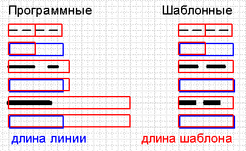
Полностью обойти это ограничение, видимо нельзя, но можно попытаться его минимизировать.
Уменьшение длины шаблона.
Допустим, нам необходимо создать линию, отвечающую ГОСТу (т.е. метрическую, а не дюймовую.) И нам известны ее размеры. Например, толщина 0,5 мм, длина черточек 15 мм, промежуток 12 мм. Цифры абстрактные. Для этого надо понять, как будет формироваться эта линия.
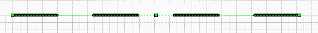
Её формирование можно рассмотреть как последовательность блоков. Длина такого блока будет равна длине черточки + длина промежутка, т.е. 27 мм.
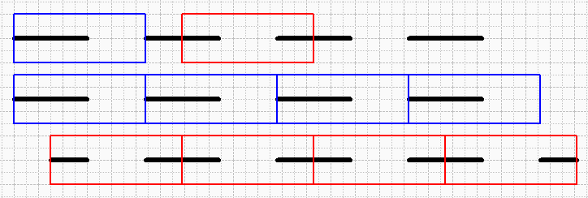
Такой блок может располагаться в любом месте этой линии. Но для удобства, можно выбрать 2 наиболее часто располагаемых мест.
Рассмотрим оба шаблона.- Первый шаблон представляет собой полную длину черточки и полную длину промежутка.
Создадим этот шаблон. Для этого необходимо сделать видимым окно Обозревателя чертежа (RU:Вид>Окна>Обозреватель чертежа EN:View>Drawing Explorer window). Нажать правой кнопкой мыши на папке Узоры линии (Line patterns) и выбрать в появившемся меню Создать узор… (New pattern…).
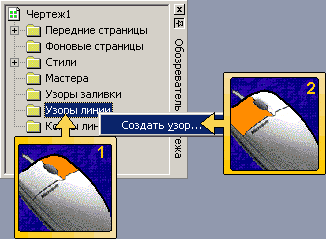
В окне диалога дать название новому узору (15х12х0,5, например) и далее нажимаем ОК.
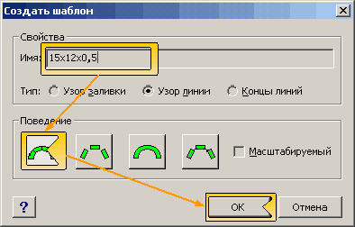
Теперь в данной папке появился значок нового узора и его название.
Затем нажимаем правой кнопкой мыши на нем, и в меню выбираем Изменить узор (Edit pattern для Visio 2002 или Edit pattern shape для Visio 2003).
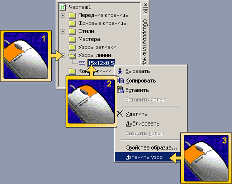
Откроется чистая страница чертежа.
Далее все манипуляции производятся на этом листе.
Для начала необходимо нарисовать прямоугольник с размерами 27х0,5. Он будет рамкой будущего узора. Для этого необходимо выбрать инструмент черчения прямоугольника (Ctrl+8). И начертить прямоугольник с данными размерами. Если сразу не получилось, то размеры всегда можно поправить вручную в окне Размер и позиция (RU:Вид>Окна>Размер и позиция EN:View>Size & Position window).
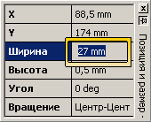
Затем необходимо начертить линию. Для этого необходимо выбрать инструмент черчения линии (Ctrl+6) и начертить линию в любом месте длиной 15 мм, т.е. будущую черточку линии. Теперь необходимо сначала выделить прямоугольник, а затем зажав Shift, выделить линию.
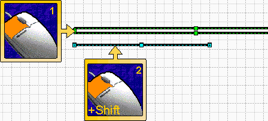
И в меню выбрать выравнивание фигур (RU:Сервис>Выравнивание фигур… для Visio 2000 или Фигура>Выравнивание фигур… для Visio 2002 EN:Shape>Align Shapes…) или нажать F8. В диалоговом окне выбрать Горизонтальное выравнивание по центру, а Вертикальное выравнивание по левому краю (Up/Down alignment по центру, Left/Right alignment по левому краю).
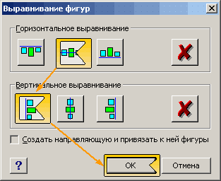
Теперь фигуры расположились как на синем шаблоне. Далее необходимо установить толщину 0 pt, для этого просто выделим обе фигуры прямоугольным выделением. Далее в меню Формат>Линия… (Format>Line…) или Shift+F3. В окне настройки линии во вкладке Толщина (Weight) необходимо выбрать Другое (Custom…) и в окне Другая толщина линии (Custom Line Weight) выставить 0 и нажать ОК. Далее закрываем окно настройки линии.
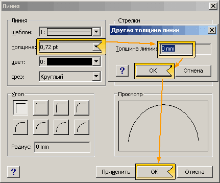
Затем группируем эти две фигуры. Либо через меню (RU:Фигура>Группировка>Группировать EN:Shape>Grouping>Group), либо Ctrl+G для Visio 2000 или Ctrl+Shift+G для остальных. Теперь из полученной группы надо удалить прямоугольник. Надо либо выделить прямоугольник в группе (тогда все его маркеры станут перечеркнуты крестиком) и удалить его.
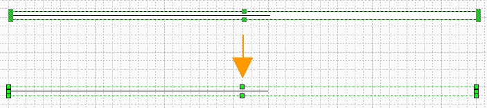
Либо открыть фигуру как группу, предварительно выделив ее, и в меню выбрать Правка>Открыть Группа (Edit>Open group) и в новом окне удалить прямоугольник из группы. Далее закрываем окно редактирования группы. И закрываем окно редактирования шаблона соглашаясь на обновление узора. Теперь создав линию и выбрав в окне настроек линии, толщину 0,5 мм и узор 15х12х0,5 получим достаточно точную пунктирную линию.
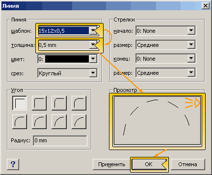
- Второй шаблон представляет собой 2 половинки черточек и 1 полную длину промежутка.
Создадим этот шаблон. Для этого необходимо сделать видимым окно Обозревателя чертежа (RU: Вид>Окна>Обозреватель чертежа EN:View>Drawing Explorer window). Нажать правой кнопкой мыши на папке Узоры линии (Line patterns) и выбрать в появившемся меню Создать узор… (New pattern…). В окне диалога дать название новому узору (15х12х0,5, например) и далее нажимаем ОК. Теперь в данной папке появился значок нового узора и его название. Теперь нажимаем правой кнопкой мыши на нем, и в меню выбираем Изменить узор (Edit pattern для Visio 2002 или Edit pattern shape для Visio 2003). Откроется чистая страница чертежа. Далее все манипуляции производятся на этом листе. Для начала необходимо нарисовать прямоугольник с размерами 27х0,5. Он будет рамкой будущего узора. Для этого необходимо выбрать инструмент черчения прямоугольника (Ctrl+8). И начертить прямоугольник с данными размерами. Если сразу не получилось, то размеры всегда можно поправить вручную в окне Размер и позиция (RU:Вид>Окна>Размер и позиция EN:View>Size & Position window). Затем необходимо начертить 2 линии. Для этого необходимо выбрать инструмент черчения линии (Ctrl+6) и начертить 2 линии в любом месте длиной 7,5 мм, т.е. будущие 2 половинки черточки линии. Теперь необходимо сначала выделить прямоугольник, а затем зажав Shift, выделить одну из линий.
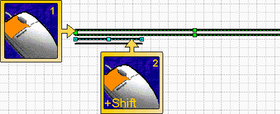
И в меню выбрать выравнивание фигур (RU:Сервис>Выравнивание фигур… для Visio 2000 или Фигура>Выравнивание фигур… для Visio 2002 EN:Shape>Align Shapes…) или нажать F8. В диалоговом окне выбрать Горизонтальное выравнивание по центру, а Вертикальное выравнивание по левому краю (Up/Down alignment по центру, Left/Right alignment по левому краю).
Затем необходимо сначала выделить прямоугольник, а затем зажав Shift, выделить другую из линий и в меню выбрать выравнивание фигур (RU:Сервис>Выравнивание фигур… для Visio 2000 или Фигура>Выравнивание фигур… для Visio 2002 EN:Shape>Align Shapes…) или нажать F8. В диалоговом окне выбрать Горизонтальное выравнивание по центру, а Вертикальное выравнивание по правому краю (Up/Down alignment по центру, Left/Right alignment по правому краю).
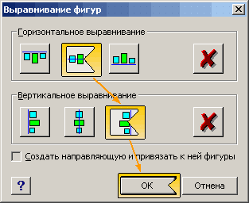
Теперь фигуры расположились как на красном шаблоне. Далее необходимо установить толщину 0 pt, для этого просто выделим 3 фигуры прямоугольным выделением. Далее в меню Формат>Линия… (Format>Line…) или Shift+F3. В окне настройки линии во вкладке Толщина (Weight) необходимо выбрать Другое (Custom…) и в окне Другая толщина линии (Custom Line Weight) выставить 0 и нажать ОК. Далее закрываем окно настройки линии. Затем группируем все фигуры. Либо через меню RU:Фигура>Группировка>Группировать EN:Shape>Grouping>Group), либо Ctrl+G для Visio 2000 или Ctrl+Shift+G для остальных. Теперь из полученной группы надо удалить прямоугольник. Надо либо выделить прямоугольник в группе (тогда все его маркеры станут перечеркнуты крестиком) и удалить, либо открыть фигуру как группу, предварительно выделив ее, и в меню выбрать Правка>Открыть Группа (Edit>Open group) и в новом окне удалить прямоугольник из группы. Далее закрываем окно редактирования группы. И закрываем окно редактирования шаблона соглашаясь на обновление узора. Теперь создав линию и выбрав в окне настроек линии, толщину 0,5 мм и узор 15х12х0,5 получим достаточно точную пунктирную линию.
Теперь некоторые пояснения. Прямоугольник который делали как шаблон для будущего узора, должен быть толщиной, как и будущая линия. Если его не сделать, то не получится сделать маркеры группы шире, чем фигуры в этой группе. Прямоугольник служит макетом, будущей толщиной линии, поэтому лучше выполнять его в реальных размерах. Помимо прямоугольника эту функцию могут выполнять другие фигуры. Толщина в 0 pt, показывает линии из которых необходимо составлять узор и неучастие этой толщины в формирование полной толщины реальной линии на чертеже, т.е. если линии узора будут не 0 pt, то отображаемая толщина линий на чертеже не будет соответствовать установленной в диалоговом окне настроек линии.
Для более сложных линий используются другие приемы построения шаблонов. Для примера рассмотрим способ создания такого шаблона линии:
Линия с 2-мя точками.
Например, ширина черточки 10 мм, промежутка 7 мм, толщина 0,5 мм.
Строится шаблон, как и в случае с простой линией. Все последующие шаблоны будут строиться «синим» способом. Для этого создадим прямоугольник равный сумме 1 черточки + промежуток + точка + промежуток + точка + промежуток, получается 10+7+7+7=31 и высотой 0,5 мм.
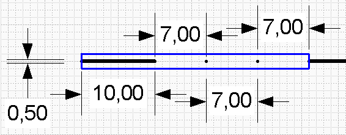
Далее необходимо создать линию длиной 10 мм и привязать справа – посередине, как было описано выше. Далее можно пойти 3-ми путями в создании точек.
- Создание точек сплошной окружностью. Для этого рисуется круг с радиусом 0,5 мм и делается заливка черным цветом. Недостатком этого способа будет превращение круглой точки в вертикальную линию или эллипс при малых расстояниях линии. К очевидным достоинствам следует отнести простоту построения.
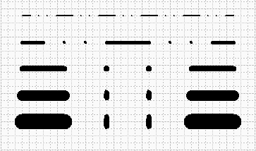
- Создание точек линией. Как ни странно это звучит, но если в настройках линии из которых состоит шаблон будет стоять форма среза, круг, то линия малой длины, будет отображаться как точка. К достоинствам можно отнести то, что при малых длинах линии, точка будет точкой, хотя промежуток между точкой и черточкой может быть еще меньше.
- Создание точки незаполненной окружностью. Для этого чертят окружность, делается ширина и высота равной 0 мм и располагается на месте точки. Этот способ лишен вышеперечисленных недостатков и является наиболее применимым.
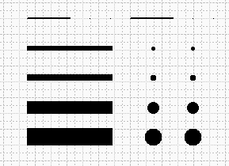
Далее все действия выполняются так же, как это было описано выше.
Итак, полученные шаблоны являются вполне используемыми, и каждый из способов это доказывает.
Сложная линия.
Сложной линией в данном случае можно считать любую линию, в которой элементы линии находятся не на одной линии. Вот пример сложной линии.
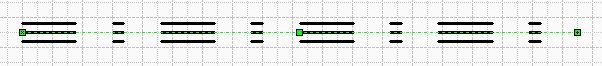
Рассмотрим способ создания 3-й линии с пунктиром. Размеры в данном случае будут такие: толщина 1 черточки 0,5 мм, длина 10 мм, горизонтальный промежуток 7 мм, вертикальный 1 мм, т.е. две толщины. Размеры пунктира 2 мм. Для начала необходимо снова создать прямоугольник. Его размеры будут складываться из следующих размеров: длина черточки + промежуток + длина пунктира + промежуток. Это будет длина, равная 10+7+2+7=26 мм. И ширина его будет составлять 0,5 мм. Т.е. прямоугольник с размерами 26х0,5 мм. В данном случае ширина прямоугольника равна толщине всего 1 линии и это сделано специально.
Далее создаем 3 линии и 3 пунктира. Затем располагаем так, как показано на рисунке.
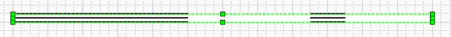
Делаем толщину всех линий равной 0 мм. Затем группируем. Теперь выделяем Элементы группы и располагаем, как показано на следующем рисунке.
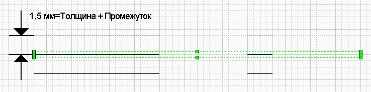
Это делается потому, что толщину каждой линий определяет общая ширина группы, и если бы были сгруппированы три линии вместе, то толщина каждой линии составила бы треть от общей толщины. Это хорошо видно на рисунке (Красная линия - без сдвига линий, синяя - со сдвигом линий).
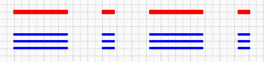
Другим примером сложной линии является провод заземления (тот, что желто – зеленый).
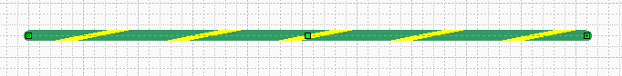
Шаблон состоит из 1-й линии и 1-го параллелограмма. Из рисунка, думаю все понятно.
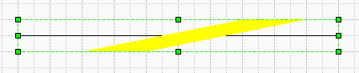
Еще примером сложной линии может служить линия с подчеркиванием или линия с фигурами ниже или выше основной линии.
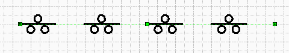
Для ее создания рисуется линия, и фигуры. Далее все фигуры «сжимают» до толщины линии, Группируем и «разжимаем» до нормальных размеров и перемещаем в нужное место.
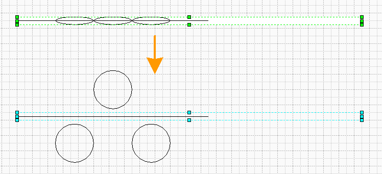
Также можно сделать шаблон для «кривой». Например, орнамент или пара дуг как на примере.
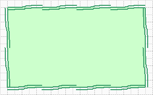
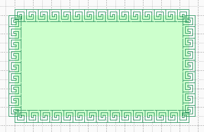
Сам орнамент тоже вначале сжимался, а потом «разжимался».
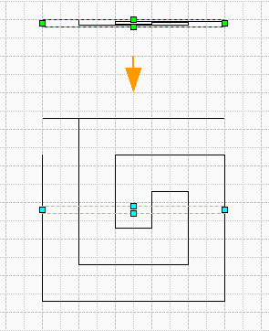
Так что все ограничивается лишь вашей фантазией.
Теперь некоторые советы:- При создании шаблона можно использовать направляющие, но после создания их надо удалить, иначе линия не будет нужной толщины(все линии станут тонкими).
- Все точки делать либо линией, либо окружностью.
- При создании шаблона можно использовать любые векторные объекты из других приложений. Их необходимо лишь разгруппировать и сделать толщину линий 0 мм. Например, шаблоны линий из Illustrator.
- Если выделить фигуру и подвезти к ней направляющую, то она несмотря на шаг сетки, «прилипнет» к краю фигуры.
- Если фигура привязана к направляющей, то к ней не работает команда Выравнивание фигур… Для работы с этой фигурой необходимо ее выделить и нажать на клавиатуре вверх и затем вниз. Фигура утратит привязку, но останется на том же месте.
Примеры из статьи.
Статьи: 1 2 3 4 5 6 7 8 9 10 11 12 13 14 15 16 17 18 19 20 21 22 23 24 25 26 27 28 29 30
В начало раздела
Автор: Ничков Алексей (a.k.a. Digitall)